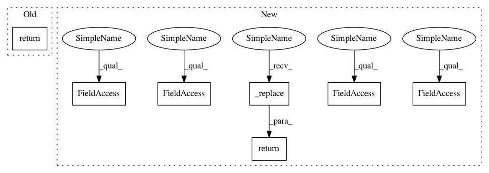

27568a7ebed1a35f08ac0390f35b3de9b8dad0dd,fairseq/models/cmlm_transformer.py,CMLMNATransformerModel,forward_decoder,#CMLMNATransformerModel#Any#Any#Any#,56
Before Change
output_tokens.masked_fill_(skeptical_mask, self.unk)
output_scores.masked_fill_(skeptical_mask, 0.0)
return {"output_tokens": output_tokens, "output_scores": output_scores}
@register_model_architecture("cmlm_transformer", "cmlm_transformer")
def base_architecture(args):
After Change
def forward_decoder(self, decoder_out, encoder_out, decoding_format=None, **kwargs):
step = decoder_out.step
max_step = decoder_out.max_step
output_tokens = decoder_out.output_tokens
output_scores = decoder_out.output_scores
// execute the decoder
output_masks = output_tokens.eq(self.unk)
_scores, _tokens = self.decoder(
output_tokens, encoder_out=encoder_out, decoding_format=decoding_format
)
output_tokens.masked_scatter_(output_masks, _tokens[output_masks])
output_scores.masked_scatter_(output_masks, _scores[output_masks])
// skeptical decoding (depend on the maximum decoding steps.)
if (step + 1) < max_step:
skeptical_mask = _skeptical_unmasking(
output_scores, output_tokens.ne(self.pad), 1 - (step + 1) / max_step
)
output_tokens.masked_fill_(skeptical_mask, self.unk)
output_scores.masked_fill_(skeptical_mask, 0.0)
return decoder_out._replace(
output_tokens=output_tokens,
output_scores=output_scores,
attn=None,
)
@register_model_architecture("cmlm_transformer", "cmlm_transformer")
def base_architecture(args):
In pattern: SUPERPATTERN
Frequency: 4
Non-data size: 7
Instances
Project Name: pytorch/fairseq
Commit Name: 27568a7ebed1a35f08ac0390f35b3de9b8dad0dd
Time: 2019-11-13
Author: myleott@fb.com
File Name: fairseq/models/cmlm_transformer.py
Class Name: CMLMNATransformerModel
Method Name: forward_decoder
Project Name: wandb/client
Commit Name: 2a581fdc54bcdef8c32326029c26145352c2c023
Time: 2021-01-21
Author: kdgoyette@gmail.com
File Name: wandb/sdk/lib/git.py
Class Name: GitRepo
Method Name: remote_url
Project Name: pytorch/fairseq
Commit Name: 27568a7ebed1a35f08ac0390f35b3de9b8dad0dd
Time: 2019-11-13
Author: myleott@fb.com
File Name: fairseq/models/cmlm_transformer.py
Class Name: CMLMNATransformerModel
Method Name: forward_decoder
Project Name: wandb/client
Commit Name: 2a581fdc54bcdef8c32326029c26145352c2c023
Time: 2021-01-21
Author: kdgoyette@gmail.com
File Name: wandb/sdk_py27/lib/git.py
Class Name: GitRepo
Method Name: remote_url